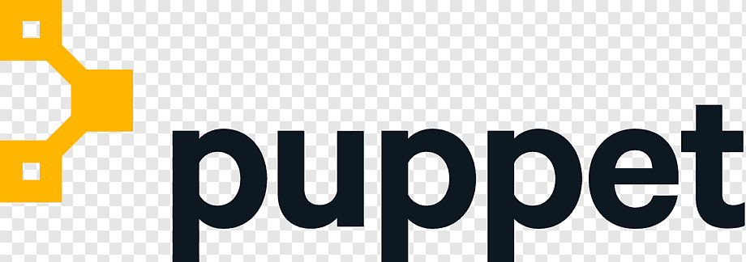
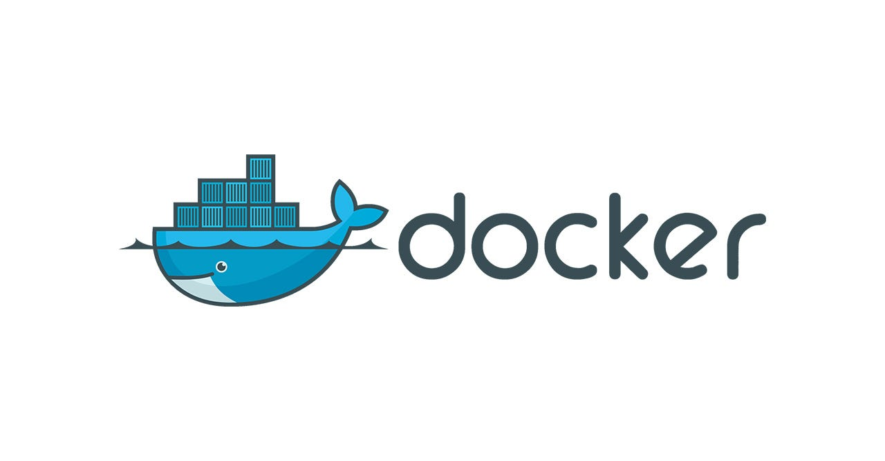
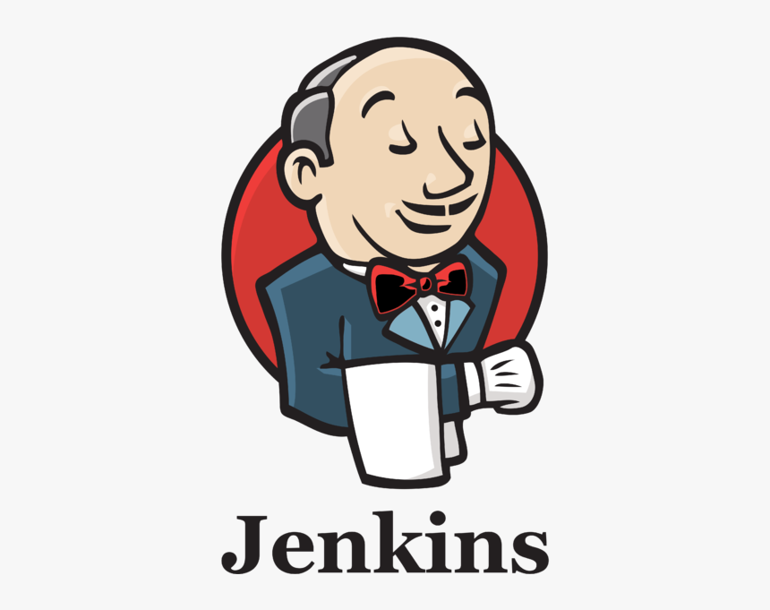

DevOps Tools Landscape
Explore the tools that power the DevOps lifecycle!
Tool Categories
Planning Tools
Tools like JIRA and Trello help plan and track progress efficiently.
Development Tools
Git and GitHub streamline collaborative coding.
CI/CD Tools
Jenkins and CircleCI automate code integration and deployment.
Popular DevOps Tools
GitHub
Docker
Jenkins
Terraform
Chef

Kubernetes
Prometheus

Puppet
Selenium
Featured Tools

GitHub
A code hosting platform for version control and collaboration.

Docker
Docker is a platform designed to help developers build, share, and run container applications.
JIRA
A project management tool designed to track and manage Agile workflows.

Jenkins
An open-source automation server for building, deploying, and automating projects.